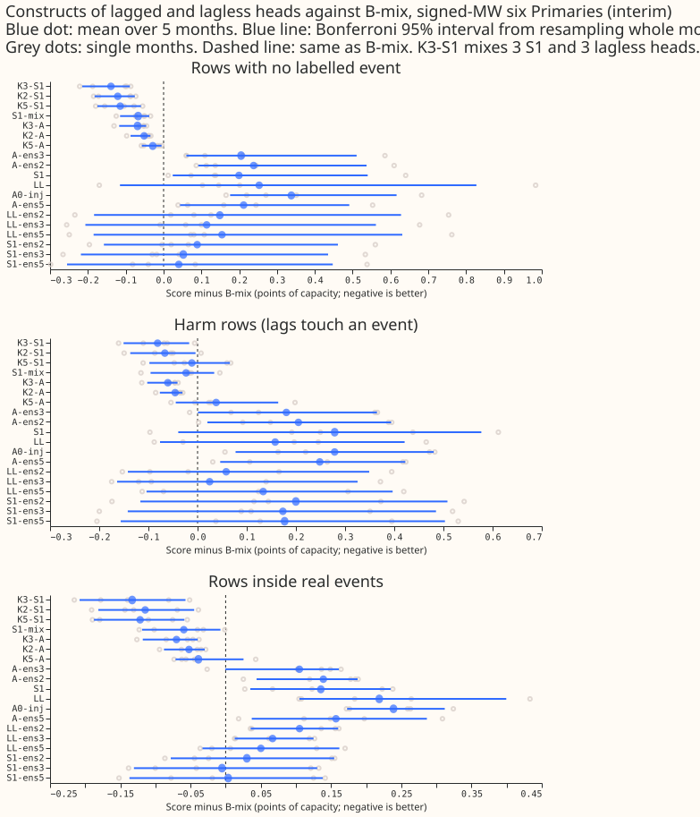
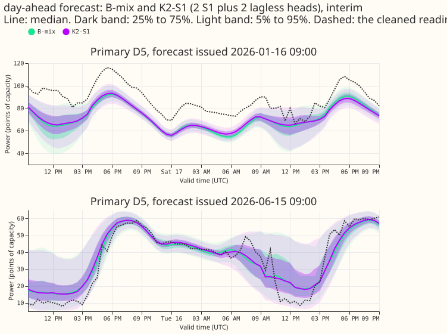
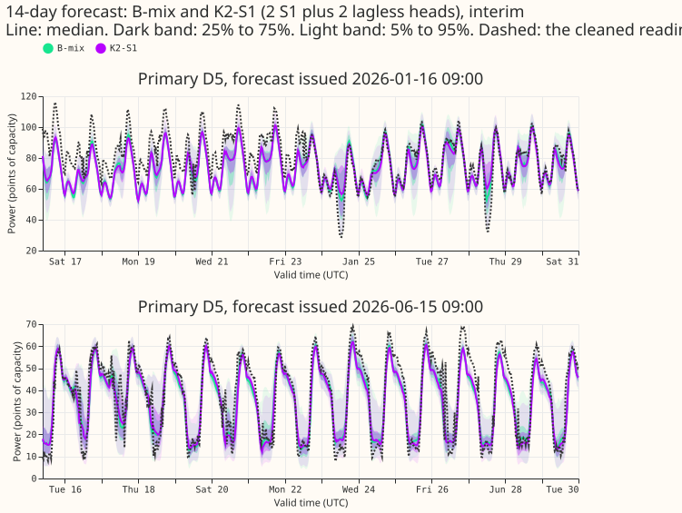
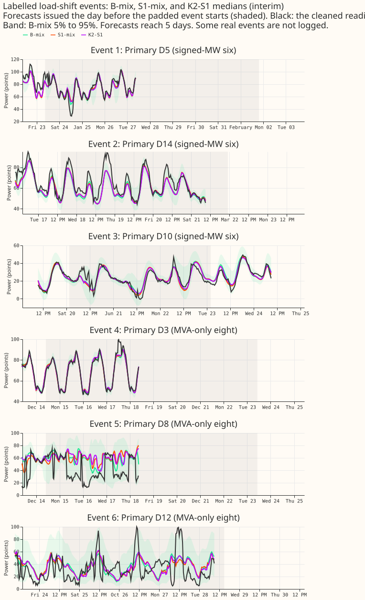

Which combination of lagged and lagless forecasts scores best, and is any combination better than a fixed 50/50 mixture of one of each?
What this experiment found
Mixing a lagged and a lagless forecast beats averaging several lagged forecasts. S1 also improves the lagged half. We asked which combination of lagged and lagless neural-network forecasts scores best for the demand at 14 Primary substations (6 metered in signed megawatts, 8 in megavolt-amperes), and whether any combination beats B-mix, a fixed 50/50 mixture of one lagged network (A0-inj) and one lagless forecast. A lagged network is given the Primary's measured power from three earlier times. A lagless forecast is made without any recent power readings; in B-mix it is read from a stored table, not run as a network at serving time. We scored 20 constructs (equal-weight mixtures of lagged networks and lagless forecasts, 1 to 10 forecasts each) on 5 test months with experiment 404's rows, and compared each with B-mix on identical rows.
K3-S1 beats B-mix by 0.139 points of capacity on rows with no labelled event, and the smallest construct within 0.03 of it is K2-S1. Averaging two A0-inj networks closes 30% of the gap between one A0-inj network and B-mix, so most of B-mix's gain is the lagged-plus-lagless diversity. Replacing A0-inj by S1 gives a better mixture on rows with no labelled event (S1-mix, 0.067 points of capacity better than B-mix at the signed-MW six), and a mixture of two S1 and two lagless heads (K2-S1) is 0.121 better. Inside real events, scored against normal-running-arrangement (NRA) actuals, only K3-A beats B-mix with an interval that excludes zero at the six; no S1 construct does. Applying the adoption rule selects K2-S1 as the construct to port (below), on a point estimate that its interval does not confirm. K2-S1 runs 4 forecasts per forecast pass against 2 for B-mix.
Units and terms. "Harm rows" are rows with no real event at the target but at least one observed
half-hour of a real event inside the three-day window before the forecast, ; "metered actuals" are
the stored power, and "NRA actuals" are the stored power corrected to the normal running arrangement
of the network. "Raw" means before any widening or correction. "Table P" is the recalibration table
of experiment 435, fitted on earlier months' rows with no labelled event. "Mass-weighted" means each
Primary's score is weighted by its share of capacity. "BG2" is experiment 87's five-model blend with
the solar offset. Scores are the continuous ranked probability score (CRPS) in points of capacity,
11 quantiles, lower is better, on forecasts up to 10 days ahead. "No labelled event" means rows
whose target and recent power readings lie outside every logged load-shift event; NGED's event logs
are incomplete, so unlabelled events remain in these rows. The signed-MW six are the six Primaries
metered in signed megawatts (D5, D9, D10, D11, D14, D16); the MVA-only eight are metered in
megavolt-amperes and are never pooled with the six. A construct named K2-S1 mixes 2 S1 and 2
lagless heads; A-ens2 averages 2 A0-inj heads. Interim, five months, no 99% claim.

Figure 2 shows day-ahead forecasts of Primary D5 from B-mix and K2-S1, issued in 2026-01 and 2026-06.

Figure 3 shows the same two forecasts over 14 days.

Figure 4 shows six real events at the six signed-MW Primaries.

Headline numbers
Signed-MW six, mean over 5 months, construct minus B-mix (points of capacity; negative is better), Bonferroni 95% interval over 57 headline contrasts (month-block; with 5 months this is close to the range of the monthly contrasts), months better out of 5, absolute score beside it. B-mix scores 3.508 (clean), 3.546 (harm), 5.872 (inside real events, metered actuals).
| Construct | Networks | Clean | Harm rows | Inside events (metered) | Inside events (NRA) |
|---|---|---|---|---|---|
| A0-inj (3.846 clean) | 1 | +0.338 [+0.176, +0.616] 0/5 | +0.279 [+0.077, +0.480] | +0.239 [+0.173, +0.312] | +0.317 [+0.185, +0.510] |
| A-ens2 (3.746) | 2 | +0.238 [+0.092, +0.537] 0/5 | +0.205 [+0.020, +0.394] | +0.139 [+0.044, +0.188] | +0.214 [+0.117, +0.370] |
| S1 (3.708) | 1 | +0.200 [+0.024, +0.540] 0/5 | +0.279 [-0.039, +0.577] | +0.136 [+0.035, +0.235] | +0.363 [+0.064, +0.695] |
| S1-mix (3.441) | 2 | -0.067 [-0.115, -0.037] 5/5 | -0.023 [-0.096, +0.034] | -0.060 [-0.119, -0.007] | +0.019 [-0.068, +0.189] |
| K2-S1 (3.387) | 4 | -0.121 [-0.182, -0.076] 5/5 | -0.067 [-0.137, -0.004] | -0.115 [-0.181, -0.045] | -0.034 [-0.127, +0.102] |
| K3-S1 (3.369) | 6 | -0.139 [-0.215, -0.089] 5/5 | -0.081 [-0.151, -0.017] | -0.133 [-0.208, -0.057] | -0.052 [-0.147, +0.073] |
| K5-S1 (3.394) | 10 | -0.114 [-0.175, -0.060] 5/5 | -0.012 [-0.098, +0.066] | -0.122 [-0.187, -0.059] | -0.139 [-0.298, +0.016] |
| K3-A (3.439) | 6 | -0.069 [-0.117, -0.046] 5/5 | -0.061 [-0.102, -0.041] | -0.070 [-0.118, -0.040] | -0.067 [-0.111, -0.040] |
- Minimum detectable effect (single fit against single fit, from the spread of B-mix across fit seeds 0 to 2): 0.24 on clean rows, 0.53 on harm rows, 0.38 inside events at the six; at the eight, 0.12 on clean rows, 0.28 on harm rows, and 0.80 inside events (all in points of capacity). The monthly contrasts above are paired on identical rows and are far tighter than these figures suggest, but a contrast inside events is not established unless its interval excludes zero.
- MVA-only eight, clean rows: S1-mix -0.079, K2-S1 -0.139, K3-S1 -0.160, K5-S1 -0.170 against B-mix 4.355, each better in 5 of 5 months. Harm rows: K2-S1 -0.050 (3 of 5), S1-mix +0.035 (2 of 5), with intervals including zero. Inside NRA events: K2-S1 -0.108 [-0.206, +0.054].
- How much is ensembling. A-ens2 closes (0.338 - 0.238) / 0.338 = 30% of the A0-inj-to-B-mix gap on clean rows at the six, and A-ens3 closes 39%, matching experiment 445 (0.29 and 0.39). A-ens2 stays 0.238 behind B-mix, far outside the 0.03 bar, so the gain is not ensembling alone and the lagless head is worth its serving cost.
- Tails, signed-MW six (pinball loss of the q99 quantile, difference against B-mix in points of capacity; the 0.02 limit is the pre-registered one): S1-mix raw clean -0.01, harm +0.01, events -0.01; K2-S1 raw -0.03, -0.04, -0.11; after table P S1-mix -0.00, -0.00, -0.00 and K2-S1 -0.02, -0.02, +0.01 (K3-S1 +0.02 inside events). All are within +0.02. Coverage of the q95 quantile on clean rows is 0.864 (S1-mix), 0.875 (K2-S1), and 0.858 (B-mix) raw against 0.95 nominal; after the 1.15 widening 0.901, 0.911, and 0.895; after table P 0.913, 0.911, and 0.913. Coverage of q99: 0.954, 0.961, 0.951 raw; 0.972, 0.978, 0.970 widened. Raw coverage of q01 on clean rows is 0.003 to 0.012 across the 20 constructs (nominal 0.01; A0-inj and S1 sit above it), and of q05 is 0.018 to 0.042, below the nominal 0.05 for every construct.
- Widening sweep (1.0, 1.05, 1.10, 1.15). B-mix, S1-mix, K2-S1, and K3-S1 still gain from the widest setting on q99 pinball loss (K2-S1 0.00202 at 1.15; B-mix 0.00258 raw and 0.00220 at 1.15; S1-mix and K3-S1 reach 0.0021 and 0.0020), so a mixture of many heads does not need less widening than 1.15. CRPS is flat from 1.05 to 1.15 (K2-S1 3.386, 3.386, 3.386).
- Production cost per forecast pass: B-mix 2 networks (1 lagged, 1 lagless); S1-mix 2; K2-S1 4; K3-S1 6; K5-S1 10. Each monthly refit trains one lagged network per Primary for B-mix and S1-mix, and as many as K for K2-S1, K3-S1, and K5-S1. The S1 variants also need the lagless table and a store of past lagless forecasts at each of the three lag times.
How the decision rule applied, and which predictions held
- Adopt the smallest construct within 0.03 of the best on clean rows at the six. The best is K3-S1 (3.369). K2-S1 (+0.018 from the best) and K5-S1 (+0.025) are within 0.03; S1-mix (+0.072) is not. The smallest within the margin is K2-S1. Its point estimate is no worse than B-mix on harm rows (-0.067) or on NRA event rows (-0.034), and its q99 loss is within +0.02 in every slice (K3-S1 on table P inside events sits at about +0.02, at the limit). "Not worse" is judged on the point estimate: the NRA interval of K2-S1 (-0.127 to +0.102) includes zero, as does that of S1-mix, so neither is shown better or worse inside NRA events. So K2-S1 is the construct to carry forward.
- S1-mix replaces B-mix only if at least 0.03 better on clean rows, not worse on harm or NRA event rows, and within the q99 limit. It is 0.067 better on clean rows and within the q99 limit, but its NRA event contrast is +0.019 (interval -0.068 to +0.189, 3 of 5 months), so its point estimate is above zero, so the rule is not met. The minimum detectable effect inside events (0.38) is far larger than 0.019, so the experiment cannot tell.
- If two-seed A0-inj ensembles match B-mix within 0.03. They do not (+0.238), so the gain is not just ensembling.
- Predictions. P1 held (30% recovered, A-ens2 does not reach B-mix). P2 held on size (0.067 lies within 0.02 to 0.10) and failed on the second half: 0.067 exceeds the 0.03 adoption bar. P3 held (K = 5 is 0.025 worse than K = 3, not better). P4 failed (the four multi-head constructs checked still gain from the widest setting).
Checks on the scores and the audit triggers
- Median minus mean forecast per site (points of capacity, clean rows at the six, seed cell 0): -0.39, -0.15, -0.66, -0.77, -0.02, -0.29 for B-mix at D5, D9, D10, D11, D14, and D16; the other constructs are within 0.7 of these, and none is larger than 0.9 in size.
- Mean forecast error beside the quantile score (mean absolute error of the mean forecast, six, clean rows, cell 0): B-mix 4.931, S1-mix 4.881, K2-S1 4.778, K3-S1 4.793, A-ens2 5.237, A0-inj 5.300. The median forecast puts K3-S1 (4.707) ahead of K2-S1 (4.732), the reverse of the mean forecast, and keeps the rest of the order. The error of the mean and the quantile score agree in direction for every construct.
- Triggers. One audit trigger fired: the first-release lag design and row 4 are ordered behind this experiment and depend on its result. The manager decided on no separate audit. The other six did not fire: there was no control or placebo, the results match the predictions except P4, no nested construct beats the one that contains it (K5-S1 loses to K3-S1 by 0.025, inside the minimum detectable effect), and no sister experiment on the same rows reports intervals to compare. A fresh Sonnet agent re-derived the headline contrasts from the stored forecasts and matched every figure to 4 decimals.
Event-weighted pooling and curtailment
Pooling events instead of rows does not change the picture. At the six, against metered actuals, with each event given equal weight (a month-block bootstrap over 25 events, 5,000 draws), K2-S1 minus B-mix inside events is -0.110 points of capacity [-0.195, -0.039], and -0.103 [-0.190, -0.030] with the largest event removed. S1-mix is -0.061 [-0.142, +0.011], and -0.054 [-0.139, +0.019] with the largest event removed. On harm rows K2-S1 is -0.081 [-0.121, -0.040]. These intervals are not Bonferroni-adjusted and use metered, not NRA, actuals.
Avoidable-curtailment cost: the S1 constructs cost less than B-mix, and BG2 costs less than every construct. The cost is experiment 449's avoidable-curtailment cost in millions of pounds, summed over 5 months and the six signed-MW Primaries (30 month-by-Primary cells; 95% interval from resampling cells, 20,000 draws). Forecasts are the mean over stored cells, widened by 1.15, on the half-hours with no labelled event that BG2 and manual_heuristic also hold. The cost is the pounds of energy-proxy cost of the forecast minus that of a perfect forecast on the same half-hours, at a node-only limit equal to f times the Primary's earlier maximum (f = 0.9 is a loose limit, f = 0.5 a tight one).
| f | B-mix | S1-mix | K2-S1 | K3-S1 | BG2 | manual_heuristic |
|---|---|---|---|---|---|---|
| 0.90 | 1.96 | 1.89 | 1.85 | 1.82 | 1.37 | 2.02 |
| 0.75 | 9.00 | 8.47 | 8.22 | 8.13 | 8.24 | 12.88 |
| 0.50 | 28.46 | 27.12 | 26.63 | 26.47 | 25.92 | 37.79 |
- K2-S1 minus B-mix: -0.11 [-0.29, +0.00] at f = 0.9, -0.78 [-1.95, -0.08] at 0.75, and -1.82 [-4.30, -0.25] at 0.5. S1-mix minus B-mix: -0.06, -0.53 [-1.31, -0.03], and -1.34 [-3.18, -0.18]. K3-A minus B-mix includes zero at every f.
- Against the references: B-mix minus BG2 is +0.59 [-0.08, +1.70] at 0.9 and K2-S1 minus BG2 is +0.48 [-0.08, +1.41], so BG2 is lower at f = 0.9 but the interval includes zero. At f = 0.75 and 0.5 K2-S1 and BG2 are within noise. Both B-mix and K2-S1 are below manual_heuristic at f = 0.75 and 0.5 (K2-S1 minus manual_heuristic -4.66 [-8.08, -1.91] and -11.15 [-15.77, -7.01]).
- Cells are few. The 30 cells are 5 months of 6 Primaries, so the intervals are wide and the months are not independent of the Primaries.
Caveats
- 5 months, one real world. The month-block interval has 5 values, so it is close to the range of the monthly contrasts. Inside real events at the six the sample is 18 harm, 25 event, and 37 clean bootstrap clusters (a cluster is one corrected event or one run of rows with no labelled event, resampled whole; experiment 455's reconciled counts, 46 corrected events in the 5 months, 21 at the six). Two months (2026-03, 2026-06) hold few event rows.
- Rows with no labelled event may hold unlabelled events (NGED's logs are incomplete). The 0.03 bars are read against possibly contaminated rows. The second row set (rows a label-free step scan finds step-free) is not reported. Experiment 456 showed that the label-free step scan cannot separate genuine level changes from noise, so the step-free row set is dropped.
- Seeds 3 and 4 share training worlds with seeds 0 and 1. Experiment 404 built training worlds (copies of the training power with injected faults) for seeds 100 to 102 only, so fit seeds 3 and 4 reuse worlds 100 and 101 and differ in initialisation and batch order. The 5-head constructs (K5, A-ens5, S1-ens5) are therefore less independent than five full draws, and K = 5 is shown beside K = 3, which has independent worlds. The seed spread and the minimum detectable effect are computed from seeds 0 to 2 only.
- Experiment 439's seeds were not reused. For 2026-06 on the real world, experiment 404 holds 259,166 rows and experiment 439 holds 192,056, the keys differ, and 439 trains with early stopping (setting g09) where 404 trains six epochs of Adam on stride-2 rows. All 36 additional networks were fitted in the 404 harness (about 20 s each on the GPU, 0.17 GPU-hours).
- Not done. The injected-fault training worlds are not rescored, and forecasts are not widened beyond the variants listed. The label-free step-scan row set is dropped (see above).
- Curtailment rows differ from the headline rows. The curtailment cost uses the half-hours with no labelled event that BG2 and manual_heuristic also hold, so it covers fewer half-hours than the headline table. - Schedule. Monthly refits (404's schedule), not weekly; a candidate that wins here is re-checked weekly before any release claim. Cleaned data and the D15 and D18 cut are inherited from 404's rows.
Compute and code
- Scripts:
ml-experiments/00454-*/e00454_fit.py(extra fit seeds),e00454_build.py(heads, constructs, exact mixture quantiles, recomputed heads checked against stored 404 forecasts to within 5e-4 of capacity),e00454_score.py,e00454_report.py,e00454_checks.py,e00454_figures.py. They import experiment 404's modules (folderml-experiments/00404-mdn-lagless-and-calibration-module-trust-weights), experiment 435's tail helpers, and experiment 445's figure helpers. - Stored: 36 networks in experiment 404's model folder
(
work/models/{A0-inj,S1}/<month>_s<seed>.pt), cached heads and constructs under this experiment'swork/folder (private, not in git), one forecast table per construct, month, and cell.
What to try next
- Port K2-S1 only after re-testing inside real events with the label-free step scan's step-free row set and with more labelled events.
- Generate training worlds for seeds 3 and 4 (cheap, the 404 world generator) to make the 5-head constructs independent draws.
- Rescore K2-S1 on the 449 row set, which shares half-hours with experiment 449's arms, so the curtailment cost can be set beside S1-pool5 and PT1-pool5.